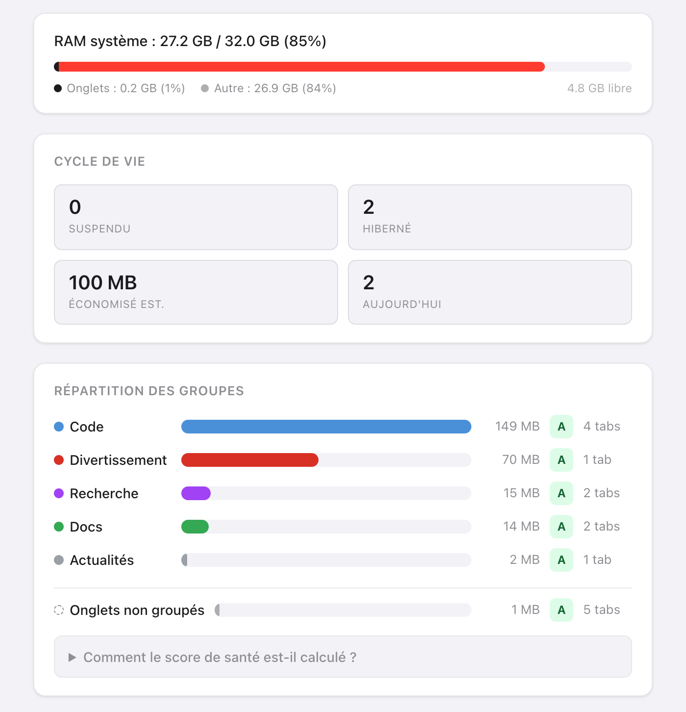
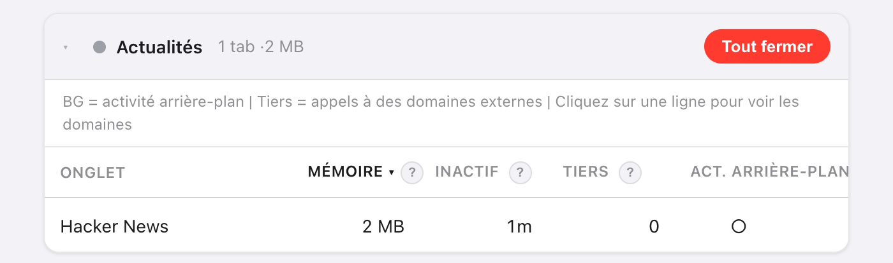
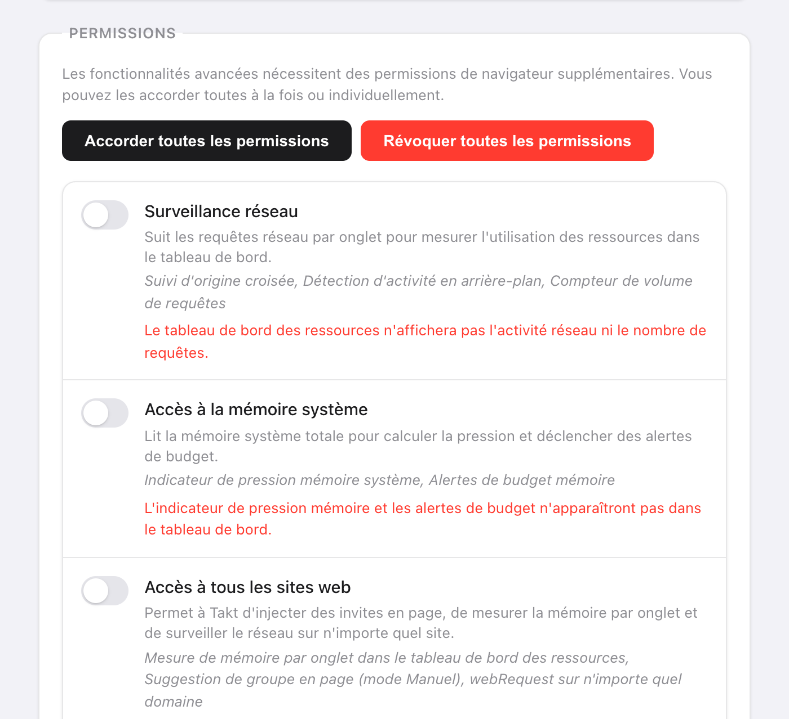

En bref : ouvrez Options → Dashboard dans Takt. Les groupes sont classés selon leur mémoire estimée, et les onglets de chaque groupe sont triés du plus gros au plus petit.
- Estimation de mémoire par onglet, temps d'inactivité, domaines tiers et activité en arrière-plan.
- Score de santé de A à F par groupe d'onglets, une barre de mémoire système, et des budgets mémoire qui déchargent les onglets à votre place.
- Premium (3 $/mois ou 30 $/an). Mesuré dans votre navigateur, par rien d'extérieur.
Pourquoi est-il difficile de savoir quel onglet utilise la mémoire ?
Chrome affiche un chiffre de mémoire dans la carte qui apparaît au survol d'un onglet, un onglet à la fois. Avec 30 onglets ouverts, cela fait 30 survols, et aucun total.
De toute façon, un onglet seul vous importe rarement. Ce qui compte, c'est de savoir si c'est « Research » ou « Entertainment » qu'il faut fermer. Takt additionne donc la mémoire par groupe d'onglets.

Comment Takt estime-t-il la mémoire d'un onglet ?
Takt exécute un court script dans chaque onglet et additionne quatre éléments :
| Élément | Mesure |
|---|---|
| Tas JavaScript | Le tas utilisé, tel que Chrome le communique à la page |
| Arbre DOM | Nombre d'éléments × environ 1,5 Ko |
| Ressources chargées | Taille décodée de chaque fichier chargé par la page |
| Tampons canvas | Largeur × hauteur × 4 octets par canvas |
Prenez le résultat comme un classement, pas comme une facture. Il n'inclut pas la charge propre au navigateur pour chaque onglet : le chiffre de Chrome pour le même onglet peut donc différer.
Certains onglets ne peuvent pas être mesurés. Rien ne tourne dans les onglets suspendus. Les pages de Chrome (chrome://), les pages d'extension et le Chrome Web Store n'autorisent pas les scripts : ils apparaissent donc sous Onglets non surveillés. Si un onglet ne répond pas en 3 secondes, Takt affiche sa dernière valeur connue.

Que signifient les scores de santé de A à F ?
Chaque groupe part de 100 points et en perd selon quatre facteurs :
| Facteur | Condition | Pénalité |
|---|---|---|
| Mémoire (total du groupe) | Plus de 500 Mo / plus de 200 Mo | −30 / −15 |
| Temps d'inactivité moyen | Plus de 60 min / plus de 30 min | −20 / −10 |
| Onglets avec activité en arrière-plan | Plus de 3 / au moins 1 | −20 / −10 |
| Domaines tiers | Plus de 50 / plus de 20 | −15 / −5 |
Notes : A pour 90 ou plus, B de 75 à 89, C de 60 à 74, D de 40 à 59, F en dessous de 40. Un groupe qui utilise 300 Mo avec des onglets inactifs depuis 45 minutes en moyenne obtient 75 : un B.
« Activité en arrière-plan » signifie que l'onglet a terminé une requête réseau au cours des 60 dernières secondes. « Tiers » désigne tout domaine autre que le site de l'onglet et ses sous-domaines. Les CDN courants sont comptés à part, pour ne pas gonfler le score.
Que faire une fois les onglets gourmands trouvés ?
- Recommandations de suspension. Takt liste 5 onglets à décharger, classés selon leur mémoire et leur temps d'inactivité, avec un poids supplémentaire pour l'activité en arrière-plan. Il écarte l'onglet actif, les onglets épinglés et un onglet seul dans son groupe. Cliquez sur Suspendre pour en décharger un.
- Tout fermer, sur une carte de groupe, ferme ce groupe.
- Mettez en veille un onglet que vous voulez retrouver plus tard. Voir comment fonctionne l'hibernation.
Puis-je plafonner la mémoire utilisée par un groupe d'onglets ?
Oui. Dans Settings → Memory Budgets, saisissez un nom de groupe et une limite en Mo. Takt vérifie les budgets toutes les 15 secondes.
Quand un groupe dépasse, vous recevez une notification : le groupe, sa consommation, son budget, et « Suspending tabs in 10s — click to cancel ». Si vous l'ignorez, Takt décharge les plus gros onglets de ce groupe jusqu'à repasser sous le budget. Il ne touche jamais à l'onglet actif, aux onglets épinglés ni aux onglets qui diffusent du son. Cliquez sur la notification pour annuler.
Les budgets s'appuient sur les mêmes estimations : ils nécessitent donc aussi Accès à tous les sites web.
De quelles permissions le tableau de bord a-t-il besoin ?
Aucune à l'installation. Vous accordez chacune d'elles dans Settings → Permissions et pouvez la révoquer au même endroit à tout moment.
| Permission | Ce qu'elle ajoute | Sans elle |
|---|---|---|
| Accès à tous les sites web | Estimations de mémoire par onglet | La mémoire affiche « — » |
| Surveillance réseau | Domaines tiers et activité en arrière-plan (nécessite aussi Accès à tous les sites web) | Pas de colonnes réseau |
| Accès à la mémoire système | La barre de RAM système | « Mémoire système non disponible » |
La surveillance réseau ne voit que les requêtes effectuées après que vous l'avez accordée. Rechargez les onglets ouverts pour lancer le décompte. Takt lit les adresses et la durée des requêtes, pas le contenu des pages.

Ce que le tableau de bord ne peut pas vous dire
Il estime la mémoire des pages. Il ne lit pas la liste des processus de Chrome : il ne voit donc ni la mémoire GPU, ni les extensions, ni le navigateur lui-même. Si la barre système range l'essentiel de votre RAM sous « Autre », cette mémoire va à d'autres applications ou à Chrome lui-même, pas à ce que contiennent vos pages.
Trouvez le groupe qui dévore votre RAM. Puis mettez-le en veille.
Ajouter Takt à ChromeQuestions fréquentes
Comment Takt estime-t-il la mémoire d'un onglet ?
Il additionne le tas JavaScript utilisé, le nombre d'éléments × environ 1,5 Ko, la taille décodée des ressources chargées, et les tampons canvas à raison de largeur × hauteur × 4 octets. Servez-vous-en pour classer les onglets.
Pourquoi la colonne Mémoire affiche-t-elle un tiret ?
Accès à tous les sites web n'est pas accordé, l'onglet est suspendu, ou c'est une page sur laquelle les extensions ne peuvent pas exécuter de scripts, comme les pages chrome://.
Le tableau de bord des ressources est-il gratuit ?
Non. Le tableau de bord et les budgets mémoire font partie de Premium, à 3 $/mois ou 30 $/an.
Takt envoie-t-il les données de mes onglets quelque part pour les mesurer ?
Non. Chaque mesure s'exécute dans votre navigateur. Voir comment Takt garde vos données en local.